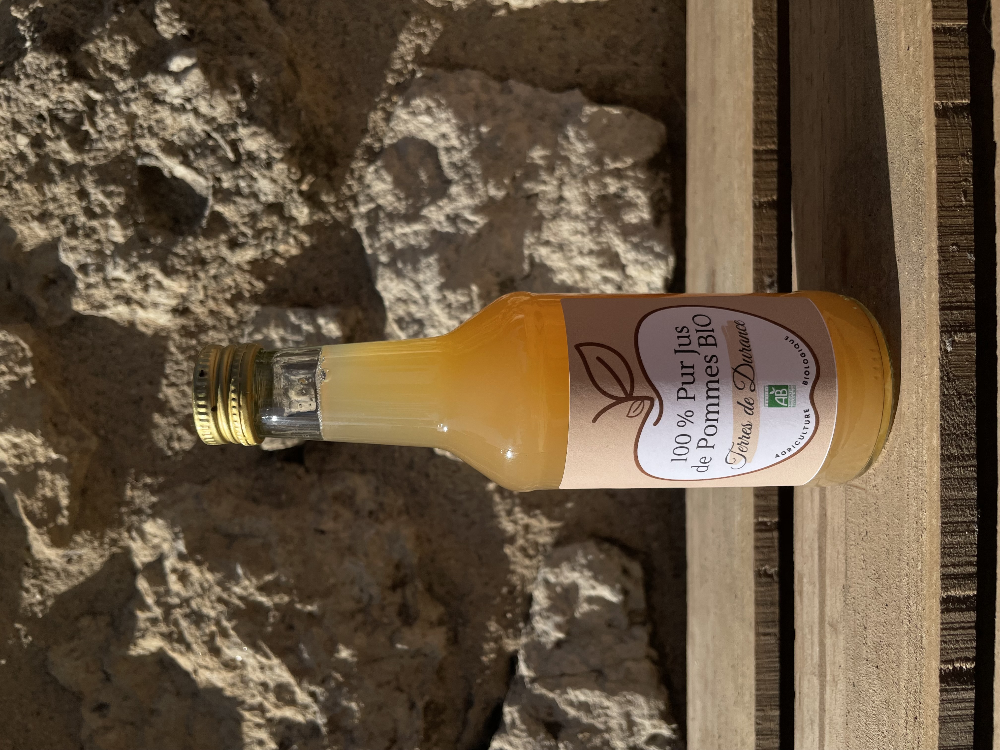
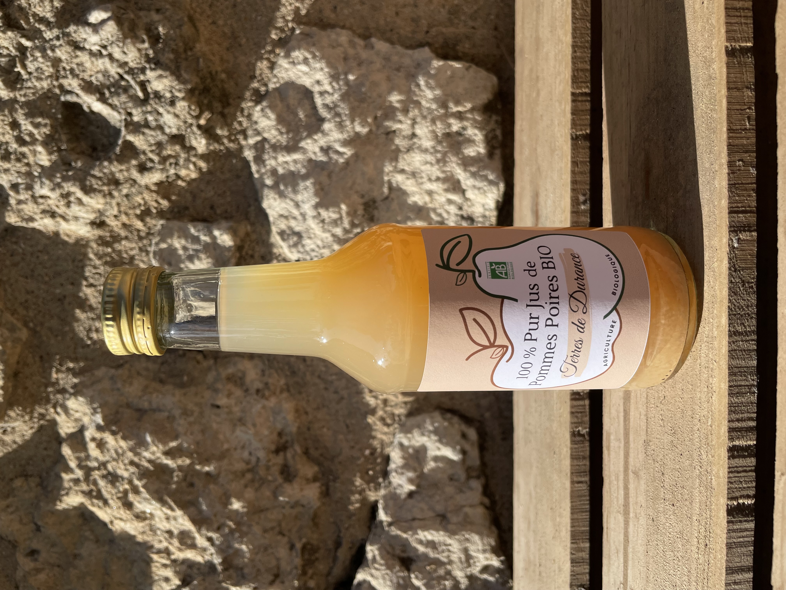
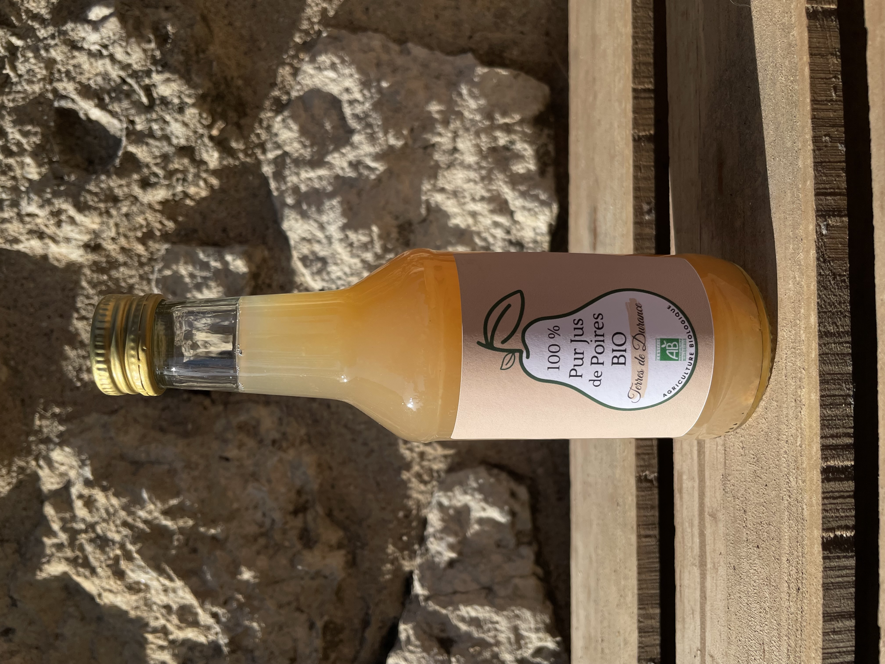

<main>
  <h1>Nos Jus De Fruits Bio </h1>
  <section id="nosJusContent">
    <div class="slide-content">
      <section class="imageAndText">
        
        <div class="text-overlay" >Pommes</div>
      </section>
      <a class="btn-overlay" (click)="goToJus('Pommes')" >En savoir plus </a>
    </div>

    <div class="slide-content">
      <section class="imageAndText">
        
        <div class="text-overlay">Pommes-Poires</div>
      </section>

      <a class="btn-overlay" (click)="goToJus('Pommes-Poires')" >En savoir plus </a>
    </div>
    <div class="slide-content">
      <section class="imageAndText">
        
        <div class="text-overlay" >Poires</div>
      </section>
      <a class="btn-overlay" (click)="goToJus('Poires')" >En savoir plus</a>
    </div>
  </section>
</main>
